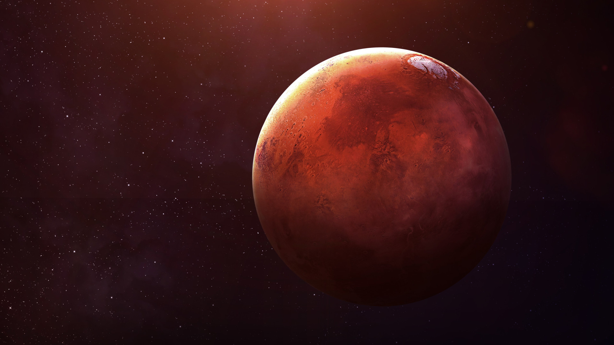
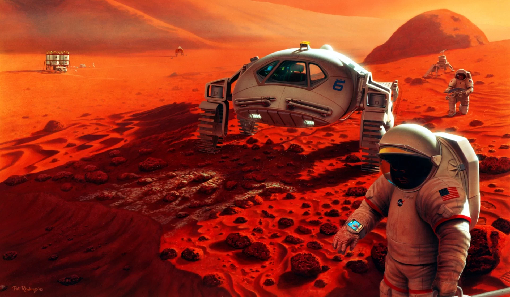

Você sabia que ja é possível viajar para marte?
Você sabia que, em pleno século 21, a humanidade está mais perto do que nunca de realizar uma das proezas mais emocionantes da exploração espacial? Viajar para Marte, o planeta vermelho, deixou de ser uma fantasia de ficção científica e está se tornando uma realidade concreta. Nas últimas décadas, avanços significativos na tecnologia espacial e a colaboração internacional abriram portas para a exploração e possível colonização de Marte.
FONTE: Universo Cosmológico
NASA, agência espacial dos Estados Unidos, juntamente com outras agências espaciais e empresas privadas, está trabalhando em planos ambiciosos para enviar seres humanos a Marte. A missão Artemis, por exemplo, tem como objetivo levar astronautas de volta à Lua, criando uma infraestrutura que possa ser usada como trampolim para futuras missões a Marte. Além disso, a SpaceX, liderada pelo empresário Elon Musk, está desenvolvendo o foguete Starship, um veículo espacial que tem a Marte como destino final.
As viagens interplanetárias não são tarefas simples. Elas envolvem desafios técnicos, físicos e psicológicos consideráveis. A viagem para Marte pode levar vários meses, e os astronautas enfrentarão radiação cósmica, falta de gravidade, solidão e a necessidade de criar sistemas sustentáveis para sobreviver em um ambiente hostil. No entanto, a promessa de descobertas científicas, expansão da fronteira humana e a busca por um plano B para a humanidade tornam esses desafios ainda mais empolgantes.
Além da exploração, a possibilidade de colonizar Marte é discutida com entusiasmo. A ideia de estabelecer uma presença humana permanente no planeta vermelho não apenas ampliaria nossas fronteiras, mas também poderia nos ajudar a enfrentar desafios na Terra, como superpopulação e esgotamento de recursos.
Embora a viagem a Marte ainda esteja em seus estágios iniciais, a possibilidade de nos tornarmos uma espécie multiplanetária está mais próxima do que nunca. À medida que continuamos a explorar, pesquisar e inovar, o sonho de viajar para Marte está se transformando em uma jornada tangível, repleta de potencial e empolgação. Estamos diante de um novo capítulo na história da exploração espacial e da busca por entender o cosmos, e Marte é o próximo destino emocionante dessa aventura espacial.
O que necessito para viajar para marte?

Viajar para Marte é um empreendimento extremamente complexo e desafiador, que requer uma extensa preparação e tecnologia avançada. Aqui está uma lista geral do que seria necessário para uma viagem tripulada a Marte:
- Veículo Espacial Adequado: Um veículo espacial capaz de transportar astronautas com segurança de e para Marte, proporcionando proteção contra a radiação e micrometeoritos.
- Propulsão Avançada: Sistemas de propulsão avançados para vencer a vasta distância entre a Terra e Marte. Isso pode envolver tecnologias como motores iônicos ou até mesmo motores de propulsão nuclear.
- Provisões de Alimentos e Água: Um suprimento adequado de alimentos e água para a tripulação durante toda a missão, que poderia durar vários meses.
- Sistemas de Reciclagem de Ar e Água: Sistemas avançados de reciclagem de ar e água para manter um ambiente habitável e sustentável a bordo.
- Trajes Espaciais Avançados: Trajes espaciais avançados que protejam os astronautas das condições extremas de Marte, incluindo radiação e temperaturas extremas.
- Alojamento Espacial: Módulos habitáveis para acomodar a tripulação durante a viagem e na superfície de Marte.
- Proteção contra Radiação: Estratégias de proteção contra a radiação cósmica, já que Marte não tem um campo magnético protetor como a Terra.
- Treinamento Intenso: Treinamento extensivo para a tripulação, incluindo habilidades de sobrevivência, medicina e manutenção de equipamentos.
- Comunicação Avançada: Sistemas de comunicação de alta tecnologia para manter contato com a Terra.
- Planejamento de Missão Detalhado: Um plano de missão detalhado que leve em consideração trajetórias, janelas de lançamento e tempo de viagem.
- Recursos Financeiros Significativos: Um orçamento substancial para cobrir os custos de pesquisa, desenvolvimento e execução de uma missão a Marte.
- Apoio Internacional: Colaboração com outras agências espaciais e países para compartilhar recursos e conhecimentos.
- Apoio Público: Apoio da opinião pública e dos governos para justificar os enormes investimentos necessários.
Procedimentos a realizar antes da viagem:
Aqui está uma lista de procedimentos que seriam necessários antes de uma viagem tripulada a Marte:
- Seleção da Equipe de Astronautas : Escolher cuidadosamente uma equipe de astronautas altamente treinados e qualificados, que possam lidar com as demandas físicas e psicológicas da missão.
- Treinamento Intenso: Proporcionar um treinamento extensivo para a equipe, incluindo simulações de voo espacial, treinamento de sobrevivência, medicina espacial e práticas de comunicação.
- Desenvolvimento da Tecnologia Espacial: Investir em pesquisa e desenvolvimento para criar tecnologia espacial avançada, como sistemas de propulsão, trajes espaciais, sistemas de reciclagem de ar e água e sistemas de suporte à vida.
- Testes de Equipamentos: Realizar testes rigorosos de todos os equipamentos e tecnologia a serem usados na missão para garantir que funcionem perfeitamente.
- Planejamento da Missão: Elaborar um plano de missão detalhado, incluindo a trajetória da nave, janelas de lançamento e tempo de viagem.
- Avaliação de Riscos: Realizar análises de riscos abrangentes para identificar possíveis desafios e desenvolver estratégias de mitigação.
- Aprovações Regulatórias: Obter todas as aprovações regulatórias necessárias de agências governamentais e organizações internacionais.
- Financiamento e Orçamento: Garantir um financiamento substancial para cobrir os custos de pesquisa, desenvolvimento e execução da missão.
- Preparação Psicológica: Fornecer apoio psicológico e treinamento para a equipe para lidar com o isolamento e o estresse de uma missão interplanetária.
- Proteção da Saúde: Implementar protocolos de saúde estritos, incluindo exames médicos, vacinações e quarentenas para garantir que a tripulação esteja saudável antes da viagem.
- Comunicação com a Equipe: Estabelecer canais de comunicação eficazes com a equipe para permitir o contato regular durante a missão.
- Preparação de Suprimentos: Assegurar um suprimento adequado de alimentos, água e medicamentos para a tripulação durante toda a missão.
- Plano de Retorno de Emergência: Desenvolver um plano de retorno de emergência caso ocorram problemas inesperados durante a viagem ou na superfície de Marte.
- Testes Pré-Lançamento: Realizar testes finais da nave espacial e equipamentos antes do lançamento./li>
- Informar o Público: Comunicar o progresso da missão ao público para manter o apoio e o interesse.
- Condições Meteorológicas Favoráveis: Aguardar uma janela de lançamento com condições meteorológicas adequadas e outros fatores de segurança.
- Aprovação Final: Receber a aprovação final da missão pelos órgãos de controle antes do lançamento.